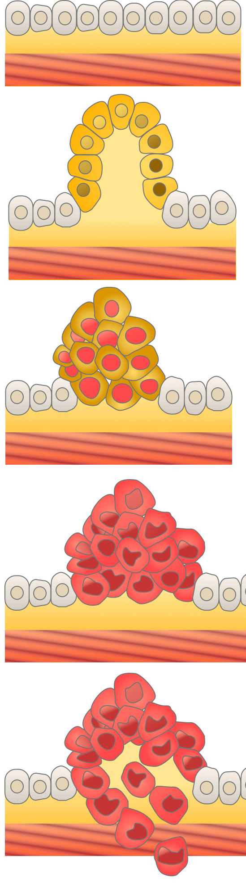

|
대부분의 대장암은 “샘종-암 경과(adenoma-carcinoma sequence)”를 통해 발생합니다. 즉, 정상 점막에서 샘종이 발생하고 이 샘종에 다양한 유전자 이상이 발생하여 커지고 이형성이 심해져 진행 샘종으로 발전하고 결국 대장암이 된다는 개념입니다.
따라서, 대부분의 대장암은 대장내시경검사를 실시해서 전암성 병변인 샘종을 제거하는 것으로 예방할 수 있습니다. 실제로 23년간 대장내시경검사 후 대장 폴립을 제거하고 추적관찰 한 National polyp study 에서는 대장내시경검사를 받고 샘종을 제거한 경우 대장암의 발생률의 76%-90%를 감소시킬 수 있고, 대장암으로 인한 사망률을 53% 감소시킬 수 있었습니다. |
 |